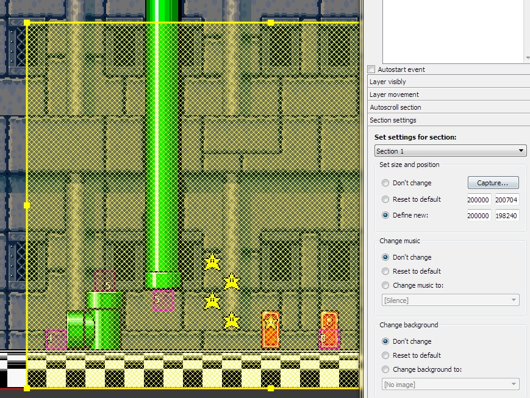

Here you can set options for each section of this level. You can define: music, background and size/position of selected section.
Inside one event, you can define options for slightly sections in one event. Also you can restore defalt settings of target section, what defined by section settings.
Set settings for section... - select the slot of settings for each sections. You can define in one event changes for multiple sections, in SMBX are available by engine, but too dificult for made by SMBX editor. Here this are fully avaliable.
Set size and position - This option can dynamicly re-define the section size and reset size to default.
Change music - This option can change music of selected section, or switch to section default.
Change background - This option can change the background of selected section.

Capturing of new size what will be defined by event

See also:
Copyright © 2014-2015 Platformer Game Engine by Wohlstand project. All rights reserved.